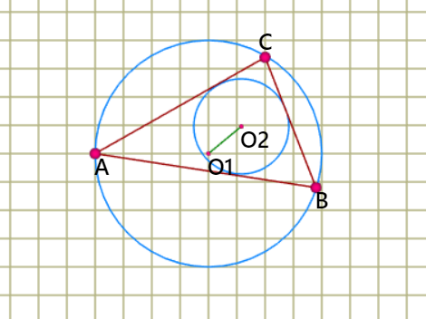

Ще ползваме една от теоремите на Ойлер.
Ойлеровата права е права в триъгълник и преминава през пресечната точка на височините,
на медианите и през центъра на описаната окръжност.
Формула на Ойлер (за намиране на разстоянието между центровете на вписаната и описаната
окръжност на триъгълник). Ако с d отбележим разстоянието между центровете на вписаната
(т.Q) и описаната окръжност на триъгълник (т.O), с R - радиуса на описаната окръжност,
а с r - радиуса на вписаната окръжност, то разстоянието между двата центъра е:
d =√( R2 - 2*R*r)
Едно от решението на задачата изисква изчисляване на лице (по формула на Херон),
изчисляване на радиус на вписаната окръжност и радиус на описаната окръжност.
Полупериметър на търиъгълника p = (a+b+c)/2
Лицето на триъгълника изчисляваме по формулата на Херон S=√(p*(p-a)*(p-b)*(p-c))
Центърът на вписаната окръжност е пресечната точка на трите ъглополовящи в триъгълника.
Радиусът на вписаната окръжност е: r=(2*S)/(a+b+c);
Центърът на описаната окръжност е пресечната точка на трите симетрали на страните
на триъгълника.
Радиусът на описаната окръжност е: R=a*b*c/(4*S);
Търсеното разстояние между двата центъра е: d =√( R2 - 2*R*r)